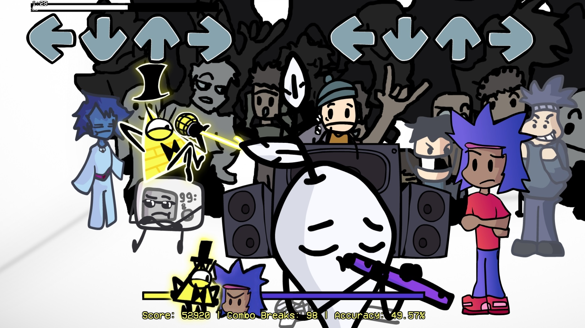

FNF vs Foxlie's Multiverse
Սքրինշոթներ


×

Տեղեկություն
Մոդ որը անուղղակիորեն կրկնում է ԲՈՂԿ-ի չատի հիմնական իրադարձություններն ու ակտիվ անդամների միջև եղած հարաբերությունները ռիթմիկ խաղի տեսքով։ Ինչպես նաև հենց մոդի ստեղծողի կյանքից որոշ դրվագներ փոքր ինչ չափազանցությամբ։
© Foxlie
Ինչպե՞ս Տեղարդրել
Արխիվը բացեք ձեզ հարմար տեղում, բացեք vsFoxliesMultiverse.exe և․․․ խաղացեք